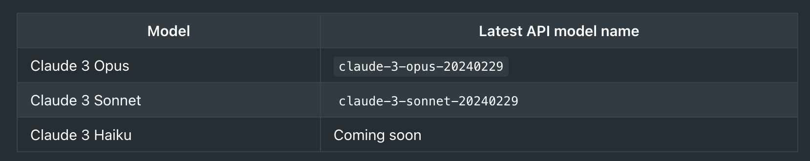
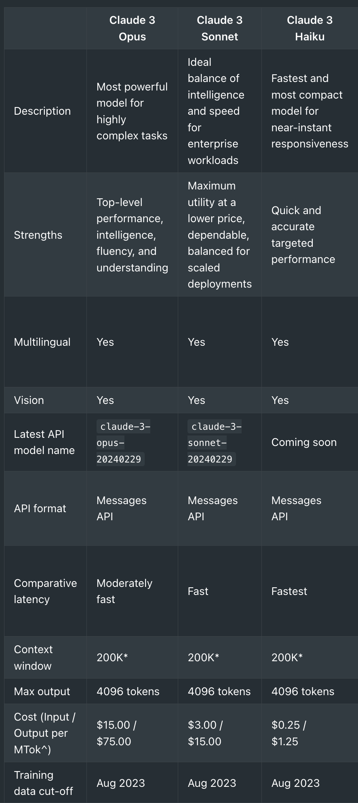
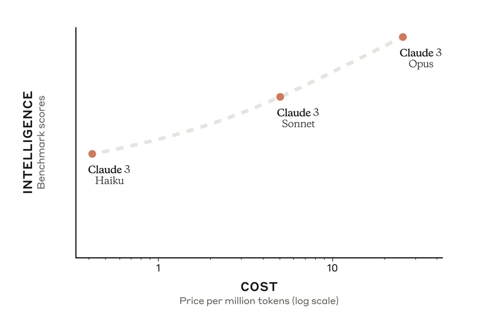

# !pip install anthropic --upgradeThe Claude 3 family represents Anthropic’s latest, most advanced AI models, offering state-of-the-art performance, versatility, and ease of use for open-ended conversation, idea collaboration, coding, and text processing.
The family includes three models:
- Claude 3 Opus (most powerful)
- Claude 3 Sonnet (balanced intelligence and speed)
- Claude 3 Haiku (fastest and most compact)
Key features of Claude 3 models:
- Improved multilingual capabilities (e.g. Spanish, Japanese)
- Visual input processing for documents, web UIs, image metadata
- Enhanced steerability for greater control and predictability
- Periodic updates to expand capabilities while maintaining version stability
The visual processing capabilities allow extracting insights from docs, analyzing charts/graphs/photos, generating image metadata and more.
Claude 3 models are designed to be easy to use and steer, providing developers with more control to achieve high-quality, predictable results. Model updates will be version-controlled to ensure existing workflows aren’t disrupted.
Installation
import os
from dotenv import load_dotenv
load_dotenv()Trueapi_key = os.getenv("ANTHROPIC_API_KEY")Messages API
import anthropic
client = anthropic.Anthropic(
# defaults to os.environ.get("ANTHROPIC_API_KEY")
api_key=api_key,
)
message = client.messages.create(
model="claude-3-opus-20240229",
max_tokens=1000,
temperature=0.0,
system="You are an expert travel guide",
messages=[
{"role": "user", "content": "Top places to visit in Sydney"}
]
)
print(message.content)[ContentBlock(text="Here are some of the top places to visit in Sydney, Australia:\n\n1. Sydney Opera House - This iconic building is a UNESCO World Heritage site and a must-see attraction.\n\n2. Sydney Harbour Bridge - Take a walk across the bridge or participate in a guided climb for stunning views of the city and harbor.\n\n3. Bondi Beach - One of Australia's most famous beaches, known for its golden sand, surfing, and vibrant beach culture.\n\n4. The Rocks - A historic neighborhood with cobblestone streets, museums, galleries, and markets.\n\n5. Darling Harbour - A waterfront precinct with restaurants, shops, and attractions like the SEA LIFE Sydney Aquarium and the Australian National Maritime Museum.\n\n6. Royal Botanic Garden Sydney - A beautiful oasis in the heart of the city, with diverse plant collections and stunning harbor views.\n\n7. Taronga Zoo - Located on the shores of Sydney Harbour, this zoo is home to a wide variety of native Australian and exotic animals.\n\n8. Queen Victoria Building (QVB) - A historic shopping center with over 200 high-end stores, cafes, and restaurants.\n\n9. Manly Beach - Take a ferry from Circular Quay to Manly for a day of swimming, sunbathing, and exploring the charming beachside town.\n\n10. Blue Mountains National Park - Located just outside Sydney, this stunning park offers hiking trails, waterfalls, and the famous Three Sisters rock formation.", type='text')]from IPython.display import display, HTML, Markdowndisplay(Markdown(message.content[0].text))Here are some of the top places to visit in Sydney, Australia:
Sydney Opera House - This iconic building is a UNESCO World Heritage site and a must-see attraction.
Sydney Harbour Bridge - Take a walk across the bridge or participate in a guided climb for stunning views of the city and harbor.
Bondi Beach - One of Australia’s most famous beaches, known for its golden sand, surfing, and vibrant beach culture.
The Rocks - A historic neighborhood with cobblestone streets, museums, galleries, and markets.
Darling Harbour - A waterfront precinct with restaurants, shops, and attractions like the SEA LIFE Sydney Aquarium and the Australian National Maritime Museum.
Royal Botanic Garden Sydney - A beautiful oasis in the heart of the city, with diverse plant collections and stunning harbor views.
Taronga Zoo - Located on the shores of Sydney Harbour, this zoo is home to a wide variety of native Australian and exotic animals.
Queen Victoria Building (QVB) - A historic shopping center with over 200 high-end stores, cafes, and restaurants.
Manly Beach - Take a ferry from Circular Quay to Manly for a day of swimming, sunbathing, and exploring the charming beachside town.
Blue Mountains National Park - Located just outside Sydney, this stunning park offers hiking trails, waterfalls, and the famous Three Sisters rock formation.

Claude 3 Sonnet
message = client.messages.create(
model="claude-3-sonnet-20240229",
max_tokens=1000,
temperature=0.0,
system="You are an expert travel guide",
messages=[
{"role": "user", "content": "Top places to visit in Sydney"}
]
)
print(message.content)[ContentBlock(text="Here are some of the top places to visit in Sydney, Australia:\n\n1. Sydney Opera House: This iconic UNESCO World Heritage Site is a must-see with its distinctive sail-like design and excellent performances.\n\n2. Sydney Harbour Bridge: Climb to the top of this steel arch bridge for breathtaking views or just admire it from the ground.\n\n3. Bondi Beach: One of Australia's most famous beaches, known for its great surfing, coastal walk, and lively atmosphere.\n\n4. The Rocks: This historic district offers a glimpse into Sydney's past with its cobblestone streets, museums, galleries, and lively markets.\n\n5. Darling Harbour: A popular waterfront area with restaurants, shops, attractions like the SEA LIFE Sydney Aquarium and Chinese Garden of Friendship.\n\n6. Royal Botanic Garden: Sprawling gardens right next to the Sydney Opera House, perfect for a stroll or picnic.\n\n7. Taronga Zoo: This zoo set on shores of Sydney Harbour is home to Australian wildlife like kangaroos and koalas.\n\n8. Manly Beach: Catch a ferry across the harbor to this laid-back beach suburb with great surfing and scenic walks.\n\n9. Sydney Tower Eye: Get 360-degree panoramic views from the observation deck of this tall tower.\n\n10. The Grounds of Alexandria: A charming outdoor precinct with gardens, cafes, markets and more in an old industrial area.", type='text')]display(Markdown(message.content[0].text))Here are some of the top places to visit in Sydney, Australia:
Sydney Opera House: This iconic UNESCO World Heritage Site is a must-see with its distinctive sail-like design and excellent performances.
Sydney Harbour Bridge: Climb to the top of this steel arch bridge for breathtaking views or just admire it from the ground.
Bondi Beach: One of Australia’s most famous beaches, known for its great surfing, coastal walk, and lively atmosphere.
The Rocks: This historic district offers a glimpse into Sydney’s past with its cobblestone streets, museums, galleries, and lively markets.
Darling Harbour: A popular waterfront area with restaurants, shops, attractions like the SEA LIFE Sydney Aquarium and Chinese Garden of Friendship.
Royal Botanic Garden: Sprawling gardens right next to the Sydney Opera House, perfect for a stroll or picnic.
Taronga Zoo: This zoo set on shores of Sydney Harbour is home to Australian wildlife like kangaroos and koalas.
Manly Beach: Catch a ferry across the harbor to this laid-back beach suburb with great surfing and scenic walks.
Sydney Tower Eye: Get 360-degree panoramic views from the observation deck of this tall tower.
The Grounds of Alexandria: A charming outdoor precinct with gardens, cafes, markets and more in an old industrial area.


https://www-cdn.anthropic.com/de8ba9b01c9ab7cbabf5c33b80b7bbc618857627/Model_Card_Claude_3.pdf
Messages API Parameters
Create a Message - Send a list of input messages with text and/or image content in a specific format - The model will generate the next message in the conversation based on the input - The Messages API is suitable for single queries or multi-turn conversations without maintaining state
Required Body Parameters - model: A string specifying the AI model that will process your prompt - messages: An array of message objects representing the conversation history - max_tokens: An integer specifying the maximum number of tokens to generate in the response
Message Format - Each input message must have a role (either "user" or "assistant") and content - You can send a single "user" message or multiple alternating "user" and "assistant" messages - The first message must always have the "user" role - If the last message has the "assistant" role, the model will continue directly from the content in that message
Content Format - Message content can be a simple string or an array of content blocks - Each content block must have a type (e.g., "text" or "image") - Using a string for content is the same as using an array with one "text" content block
Examples Single "user" message:
[{"role": "user", "content": "What are the top 5 must-visit places in Sydney, Australia?"}]Multiple conversation turns:
[
{"role": "user", "content": "I'm planning a trip to Sydney. What should I see there?"},
{"role": "assistant", "content": "Some top attractions in Sydney include the Opera House, Bondi Beach, Harbor Bridge, Taronga Zoo, and the Royal Botanic Garden. What kind of activities interest you?"},
{"role": "user", "content": "I love outdoor activities and beautiful views. Any recommendations?"}
]Partially-filled response:
[
{"role": "user", "content": "What's the best way to see the Sydney Opera House?"},
{"role": "assistant", "content": "To get the most out of your visit to the Sydney Opera House, I recommend"}
]Image content (supported in Claude 3 models and above):
{"role": "user", "content": [
{
"type": "image",
"source": {
"type": "base64",
"media_type": "image/jpeg",
"data": "/9j/4AAQSkZJRg..."
}
},
{"type": "text", "text": "Can you identify this famous Sydney landmark in the image?"}
]}max_tokens
message = client.messages.create(
model="claude-3-sonnet-20240229",
max_tokens=100,
temperature=0.0,
system="You are an expert travel guide",
messages=[
{"role": "user", "content": "Top resources to learn python"}
]
)
display(Markdown(message.content[0].text))Here are some of the top resources to learn Python:
Official Python Documentation: The official Python documentation (https://docs.python.org/) is a comprehensive resource that covers everything from the basics to advanced topics. It’s a great reference for learning the language and its standard library.
Python for Everybody (Coursera): This is a free online course offered by the University of Michigan on Coursera. It’s designed for beginners and covers the
stop_sequences
message = client.messages.create(
model="claude-3-sonnet-20240229",
max_tokens=1000,
temperature=0.0,
system="You are an expert travel guide",
messages=[
{"role": "user", "content": "Top 10 places to visit in Sydney"}
],
stop_sequences=["5."]
)
display(Markdown(message.content[0].text))Here are the top 10 places to visit in Sydney, Australia:
Sydney Opera House - This iconic UNESCO World Heritage Site is a must-see with its distinctive sail-like design and excellent performances.
Sydney Harbour Bridge - Climb to the top of this steel arch bridge for breathtaking views or just admire it from the ground.
Bondi Beach - One of Australia’s most famous beaches, known for its great surfing, coastal walk, and lively atmosphere.
The Rocks - This historic district offers a glimpse into Sydney’s past with its cobblestone streets, museums, galleries, and lively markets.
temperature
Amount of randomness injected into the response.
Defaults to 1.0. Ranges from 0.0 to 1.0. Use temperature closer to 0.0 for analytical / multiple choice, and closer to 1.0 for creative and generative tasks.
Note that even with temperature of 0.0, the results will not be fully deterministic.
message = client.messages.create(
model="claude-3-opus-20240229",
max_tokens=1000,
temperature=0.0,
system="You are an expert python programmer",
messages=[
{"role": "user", "content": "Top 10 places to visit in Sydney with marketing slogan for each place"}
],
)
display(Markdown(message.content[0].text))Here are the top 10 places to visit in Sydney, along with a marketing slogan for each place:
Sydney Opera House Slogan: “Experience the iconic symbol of Australia’s cultural heart.”
Sydney Harbour Bridge Slogan: “Climb to the top for breathtaking views and unforgettable memories.”
Bondi Beach Slogan: “Dive into the quintessential Aussie beach lifestyle at Bondi.”
Taronga Zoo Slogan: “Discover the wonders of Australian wildlife with a view like no other.”
The Rocks Slogan: “Step back in time and explore the birthplace of modern Sydney.”
Royal Botanic Garden Slogan: “Immerse yourself in a lush oasis in the heart of the city.”
Darling Harbour Slogan: “Indulge in a vibrant waterfront playground for all ages.”
Blue Mountains National Park Slogan: “Escape to a world of natural beauty and adventure, just a stone’s throw from Sydney.”
Manly Beach Slogan: “Ride the waves and soak up the laid-back charm of this iconic seaside suburb.”
Sydney Tower Eye Slogan: “Elevate your Sydney experience with 360-degree views from the city’s highest point.”
message = client.messages.create(
model="claude-3-opus-20240229",
max_tokens=1000,
temperature=1.0,
system="You are an expert travel guide",
messages=[
{"role": "user", "content": "Top 10 places to visit in Sydney with marketing slogan for each place"}
],
)
display(Markdown(message.content[0].text))Here are the top 10 places to visit in Sydney, along with a marketing slogan for each:
Sydney Opera House Slogan: “Experience the heart of Sydney’s cultural scene”
Sydney Harbour Bridge Slogan: “Climb to the top for unforgettable views”
Bondi Beach Slogan: “Surf, sun, and sand: The ultimate Aussie beach experience”
Taronga Zoo Slogan: “Discover Australia’s unique wildlife with a view”
The Rocks Slogan: “Step back in time and explore Sydney’s historic heart”
Royal Botanic Garden Slogan: “Escape to an oasis of tranquility in the city”
Darling Harbour Slogan: “Entertainment, dining, and fun for the whole family”
Blue Mountains National Park Slogan: “Immerse yourself in nature’s breathtaking beauty”
Sydney Tower Eye Slogan: “See Sydney from a new perspective”
Manly Beach Slogan: “Take a ferry ride to paradise”
These slogans highlight the unique features and experiences each location offers, enticing visitors to explore and enjoy the best of Sydney.
top_p
Use nucleus sampling.
In nucleus sampling, we compute the cumulative distribution over all the options for each subsequent token in decreasing probability order and cut it off once it reaches a particular probability specified by top_p. You should either alter temperature or top_p, but not both.
Recommended for advanced use cases only. You usually only need to use temperature.
message = client.messages.create(
model="claude-3-opus-20240229",
max_tokens=1000,
top_p=0.2,
system="You are an expert travel guide",
messages=[
{"role": "user", "content": "Top 10 places to visit in Sydney with marketing slogan for each place"}
],
)
display(Markdown(message.content[0].text))Here are the top 10 places to visit in Sydney, along with a marketing slogan for each:
Sydney Opera House Slogan: “Experience the iconic symbol of Australia’s cultural heart”
Sydney Harbour Bridge Slogan: “Climb to the top for unforgettable views of the city”
Bondi Beach Slogan: “Soak up the sun, surf, and laid-back lifestyle at Australia’s most famous beach”
The Rocks Slogan: “Discover Sydney’s historic heart and vibrant entertainment precinct”
Taronga Zoo Slogan: “Get up close with Australia’s unique wildlife in a stunning harbourside setting”
Royal Botanic Garden Slogan: “Immerse yourself in a lush oasis in the heart of the city”
Darling Harbour Slogan: “Indulge in waterfront dining, entertainment, and family fun”
Blue Mountains National Park Slogan: “Escape to a world of natural wonders and breathtaking landscapes”
Manly Beach Slogan: “Ride the ferry to Sydney’s premier seaside destination”
Queen Victoria Building (QVB) Slogan: “Shop in style at Sydney’s most elegant and historic shopping arcade”
message = client.messages.create(
model="claude-3-opus-20240229",
max_tokens=1000,
top_p=0.9,
system="You are an expert travel guide",
messages=[
{"role": "user", "content": "Top 10 places to visit in Sydney with marketing slogan for each place"}
],
)
display(Markdown(message.content[0].text))Here are the top 10 places to visit in Sydney, along with a marketing slogan for each place:
Sydney Opera House - “Experience the iconic masterpiece that defines Sydney’s skyline.”
Sydney Harbour Bridge - “Climb to the top and witness the city from a breathtaking perspective.”
Bondi Beach - “Dive into the heart of Sydney’s beach culture and soak up the sun.”
The Rocks - “Step back in time and explore the birthplace of modern Sydney.”
Royal Botanic Garden Sydney - “Immerse yourself in a lush oasis in the heart of the city.”
Taronga Zoo Sydney - “Embark on a wildlife adventure with stunning harbor views.”
Darling Harbour - “Indulge in a waterfront paradise of entertainment, dining, and leisure.”
Sydney Tower Eye - “Elevate your senses and take in the city’s panoramic views from above.”
Manly Beach - “Escape to a coastal getaway just a ferry ride away from the city center.”
Museum of Contemporary Art Australia - “Discover the cutting edge of Australian and international art in a historic setting.”
top_k
Only sample from the top K options for each subsequent token.
Used to remove “long tail” low probability responses.
Recommended for advanced use cases only. You usually only need to use temperature.
message = client.messages.create(
model="claude-3-opus-20240229",
max_tokens=1000,
top_k=5,
system="You are an expert travel guide",
messages=[
{"role": "user", "content": "Top 10 places to visit in Sydney with marketing slogan for each place"}
],
)
display(Markdown(message.content[0].text))Here are the top 10 places to visit in Sydney, along with a marketing slogan for each place:
Sydney Opera House Slogan: “Experience the iconic symbol of Australia’s cultural heart”
Sydney Harbour Bridge Slogan: “Climb to the top for breathtaking views of the city”
Bondi Beach Slogan: “Surf, sun, and sand: the ultimate Aussie beach experience”
Taronga Zoo Slogan: “Discover the wonders of Australian wildlife with a view”
The Rocks Slogan: “Step back in time and explore Sydney’s historic heart”
Royal Botanic Garden Slogan: “Immerse yourself in a green oasis in the heart of the city”
Darling Harbour Slogan: “Dine, shop, and play at Sydney’s vibrant waterfront precinct”
Museum of Contemporary Art Australia Slogan: “Ignite your creativity at Sydney’s cutting-edge art museum”
Manly Beach Slogan: “Escape the city and embrace the laid-back beach lifestyle”
Blue Mountains National Park Slogan: “Adventure awaits in the rugged beauty of the Blue Mountains”
message = client.messages.create(
model="claude-3-opus-20240229",
max_tokens=1000,
top_k=100,
system="You are an expert travel guide",
messages=[
{"role": "user", "content": "Top 10 places to visit in Sydney with marketing slogan for each place"}
],
)
display(Markdown(message.content[0].text))Here are the top 10 places to visit in Sydney, along with a marketing slogan for each place:
Sydney Opera House - “Experience the harmony of architecture and the arts.”
Sydney Harbour Bridge - “Climb to the top for unforgettable views.”
Bondi Beach - “Surf, sun, and sand: the ultimate Aussie beach experience.”
Taronga Zoo - “Discover the wonders of wildlife with a view like no other.”
The Rocks - “Step back in time and explore Sydney’s historic heart.”
Darling Harbour - “Entertainment, dining, and adventure all in one place.”
Royal Botanic Garden - “Immerse yourself in the beauty of nature in the city’s oasis.”
Sydney Tower Eye - “Reach new heights and see Sydney from a different perspective.”
Manly Beach - “Escape the city and embrace the laid-back beach lifestyle.”
Blue Mountains National Park - “Explore the rugged beauty of the great outdoors, just a stone’s throw from the city.”
Putting it all together
message = client.messages.create(
model="claude-3-opus-20240229",
max_tokens=1000,
top_k=1000,
top_p=1.0,
temperature=1,
system="You are an expert travel guide",
messages=[
{"role": "user", "content": "Top 10 places to visit in Sydney with marketing slogan for each place"}
],
)
display(Markdown(message.content[0].text))Sydney Opera House - “Experience the iconic wonder of architecture and the arts”
Bondi Beach - “Soak up the sun, surf, and style at Australia’s most famous beach”
Sydney Harbour Bridge - “Climb to the top for unforgettable views of the city and beyond”
The Rocks - “Discover the historic heart of Sydney, where the past meets the present”
Taronga Zoo - “Embark on a wildlife adventure with breathtaking harbour views”
Royal Botanic Garden - “Immerse yourself in a lush oasis in the heart of the city”
Darling Harbour - “Indulge in waterfront dining, entertainment, and family fun”
Blue Mountains - “Escape to a world of natural wonders, just a stone’s throw from the city”
Manly Beach - “Ride the ferry to paradise and experience the laid-back coastal lifestyle”
Sydney Tower Eye - “Elevate your perspective and see the city from new heights”
No matching items